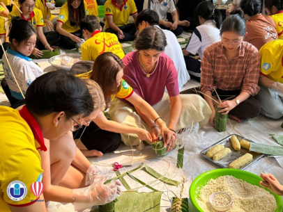

Kết bạn và Hỗ trợ Sinh viên Quốc tế
Bối cảnh thực tế
CLB IU Buddy được thành lập nhằm kết nối sinh viên IU với các bạn sinh viên quốc tế đến trao đổi học tập tại trường. Vào dịp Tết Nguyên đán (năm 2021 và 2024), IU Buddy tổ chức hoạt động truyền thống gói bánh chưng, bánh tét gắn kết văn hóa.
Điểm khó xử
Khi trò chuyện, một bạn quốc tế tò mò về cách xưng hô kính ngữ “anh”, “chị”, “em” và các phong tục ngày Tết. Sinh viên IU nên giải thích thế nào để vừa gần gũi, chính xác mà không biến thói quen riêng của một gia đình hay vùng miền thành chuẩn mực của toàn bộ người Việt?
Cách ứng xử đề xuất
- Giải thích cách xưng hô bằng ví dụ đời thường, phân biệt rõ tập quán giao tiếp chung với thói quen gia đình riêng.
- Mời bạn quốc tế cùng trải nghiệm hoạt động thực tế như gói bánh chưng/bánh tét; thông qua trải nghiệm để bạn cảm nhận tinh thần sum vầy ngày Tết.
- Chủ động lắng nghe và tìm hiểu về nét văn hóa quê hương của người bạn quốc tế để tạo sự tương tác hai chiều, bình đẳng.
Vận dụng Tư tưởng Hồ Chí Minh
Vận dụng quan điểm của Bác về ngoại giao hữu nghị và bản sắc qua hai lớp: giới thiệu ngôn ngữ và phong tục (lớp hình thức) gắn liền với tấm lòng hiếu khách, chân thành (lớp nội dung). Việc không quy chụp phong tục riêng thành tập quán chung thể hiện sự tôn trọng tính đa dạng văn hóa.
Hình 1.1: Sinh viên quốc tế cùng SV IU gói bánh chưng xanh truyền thống tại IU
Nguồn minh chứng: Facebook IU Buddy
Hình 1.2: Sinh viên trao đổi thích thú trải nghiệm làm bánh tét
Nguồn minh chứng: Facebook IU Buddy